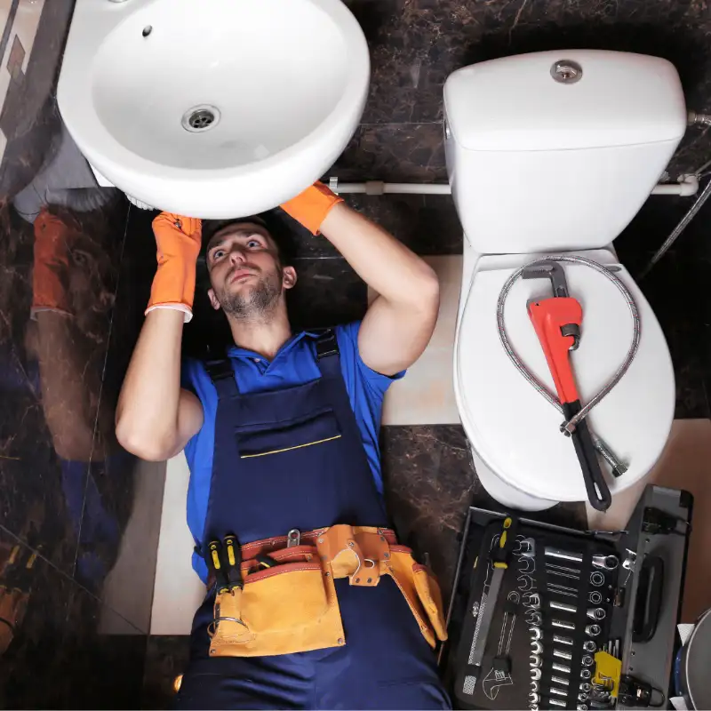
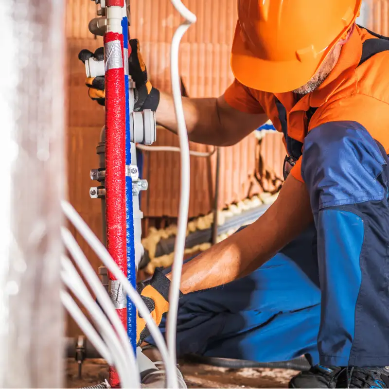
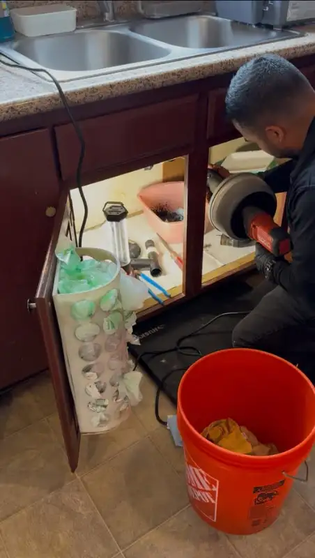
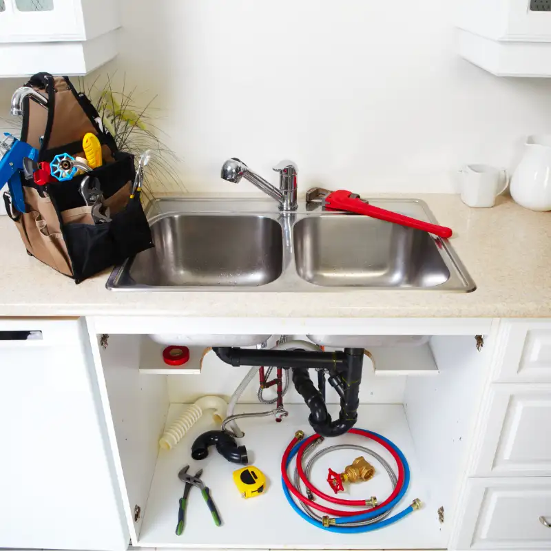
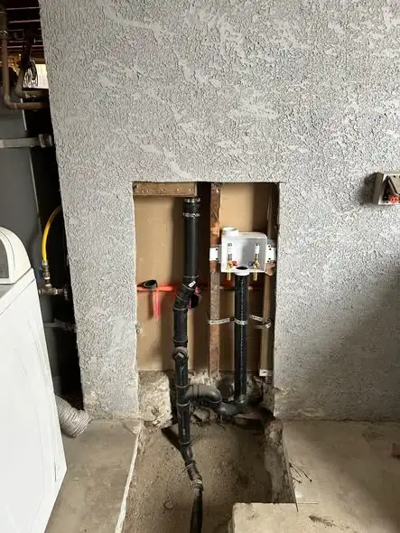
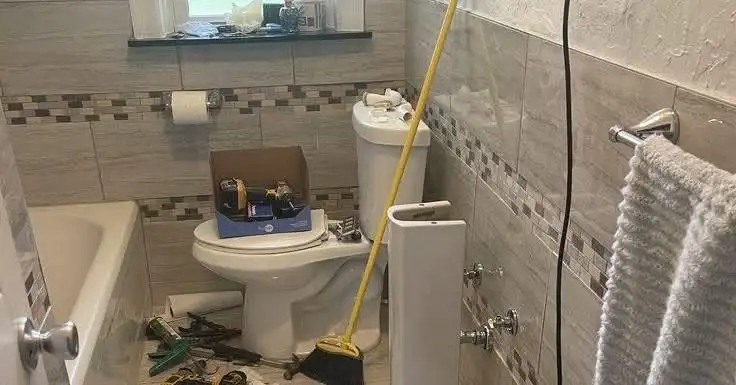

Burien, WA · Open 24/7
Plumber in Burien, WA, Ready 24/7
Need a plumber in Burien right now? Call (833) 710-2588. We fix leaks, clogs, water heaters, and sewer lines across Burien and nearby towns, day or night.

- Open 24/7Phone answered day and night
- Free quotePrice range on the call
- Firm priceIn writing before work starts
- 6 local areasBurien and nearby towns
Good to know
What plumbing services can you hire us for in Burien?
We handle the plumbing jobs Burien homeowners call about most: emergency repairs, clogged drains, water heater repair and replacement, hidden leaks, sewer line problems, and broken or worn-out pipes. Each one has its own page with prices, warning signs, and what to expect.

24/7 emergency lineEmergency Plumber
Burst pipe, overflowing toilet, or sewage coming up a floor drain? Call our 24/7 emergency plumber line. We talk you through shutting off the water while a plumber heads your way, then stop the leak, protect your home, and give you a firm price before any repair starts.
Get emergency help
Drain Cleaning
Slow sink, clogged toilet, or a main line backing up into the tub? Our drain cleaning service clears kitchen, bath, and sewer lines with snakes and hydro jetting. If the clog keeps coming back, we run a camera to find the cause, so you pay to fix it once, not every few months.
See costs and signs
Water Heater Repair
No hot water, a leaking tank, or rusty water from the tap? We repair and replace gas, electric, and tankless water heaters across Burien. Most repairs are done in one visit. If your tank is near the end of its life, you get clear repair and replace prices before we start.
See costs and signs
Leak Detection
High water bill, a damp ceiling, or the sound of running water when everything is off? Our leak detection service uses listening gear, moisture meters, and thermal cameras to find hidden leaks in walls, slabs, and yard lines, so we open only what we must and fix it fast.
See costs and signs
Sewer Line Repair
Sewage smells, gurgling drains, or backups in more than one fixture? Many Burien homes still have old clay side sewers that crack and fill with roots. We camera-inspect the line, show you the video, and quote root removal, spot repair, or trenchless replacement up front.
See costs and signs
Pipe Repair & Repiping
Burst, frozen, or leaking pipes, low pressure, or brown water from old galvanized lines? We fix single pipe sections the same day when possible and repipe whole homes in PEX or copper. You get a written price first, and we patch the access holes we make when the job is done.
See costs and signs
Not sure which one fits your problem? That is fine. Call and describe what you see, hear, or smell. We will tell you what it most likely is and what it usually costs before anyone drives out.
The basics
Which plumbing repair do you need? Check your symptoms
Pick the symptom that matches what you see. Each one links to the service that usually fixes it, with prices and warning signs. If you notice more than one, start with the most urgent and call. We can sort it out together on the phone.
- Water spraying or coming through the ceilingUrgentEmergency Plumber
- No hot water or a puddle under the tankUrgentWater Heater Repair
- Sewage smell or backup in a floor drainUrgentSewer Line Repair
- Pipes froze during a cold snapUrgentPipe Repair & Repiping
- Several drains slow or gurgling at onceSoonSewer Line Repair
- Water bill jumped with no new useSoonLeak Detection
- One sink, tub, or toilet slow to drainScheduleDrain Cleaning
- Low pressure or brown water in an older homeSchedulePipe Repair & Repiping
Pro tip
Find your main water shutoff today, before you need it. In most Burien homes it is in the crawl space, basement, or garage. Tag it so anyone in the house can find it fast.
Why act now
Why hire a local Burien plumber instead of a national chain?
You get a local plumbing service that only works Burien and the towns right around it. That means shorter drives, plumbers who know mid-century South King County homes, and a phone call that ends with a clear plan, a price range, and an arrival window.
- Local focus. We serve Burien, Seahurst, White Center, Boulevard Park, Normandy Park, and SeaTac. We do not split our day across the whole Puget Sound.
- Price talk up front. You hear a typical price range on the phone. You get a firm price before work starts, so you can say yes or no.
- Homes like yours. Most Burien houses were built from the 1940s to the 1970s. We see galvanized pipe, cast iron drains, and clay sewer lines every week.
- Straight answers. If a repair will not last, we say so. If a cheap fix will do, we say that too.
- Clean work. Shoe covers, drop cloths, and a cleaned-up work area when we leave.
How it works
What happens when you call for plumbing service?
A real person answers, asks what is going on, and helps you stop any active damage. Then we give you a price range and the next open arrival window. A plumber shows up, finds the cause, and gives you a firm price before fixing it.
- Call (833) 710-2588. Tell us the problem, your address or ZIP, and whether water is leaking now.
- Get a plan and a window. We explain likely causes, typical cost, and when a plumber can be there. For leaks, we walk you through shutting off the water.
- Approve the price, then we fix it. The plumber inspects, shows you the problem, and quotes a firm price. Work starts only after you say yes.
Paying is simple. You pay when the job is done and you are happy with how it works. Ask about payment options on the call.
Warning
Do not pour chemical drain cleaner into a backed-up main line. It rarely reaches the clog and can burn the plumber who has to clear it.
Emergency
Do you need a 24 hour emergency plumber right now?
It is an emergency if water is spreading, sewage is backing up, you smell gas, or you have no water or no heat source for hot water in winter. Those problems get worse every hour. Call right away, even at night. Slow drips and running toilets can usually wait for a scheduled visit.
Call now for these
- A burst or spraying pipe
- Water coming through a ceiling or wall
- Sewage coming up in a tub, shower, or floor drain
- A leaking water heater, or no hot water at all
- A toilet that overflows and will not stop
- Frozen pipes during a cold snap
What to do while you wait
- Shut off the main water valve. In most Burien homes it is in the crawl space, basement, or garage, near where the line enters the house. Some homes also have a shutoff at the meter box near the street.
- For a leaking water heater, turn the cold water valve on top to off. On gas units, turn the gas knob to "pilot" or "off." On electric units, switch off the breaker.
- Stop using sinks, toilets, and the washer if drains are backing up.
- Move rugs, boxes, and electronics away from the water. Take photos for insurance.
Pricing
How much does a plumber cost in Burien, WA?
Most small plumbing repairs in Burien cost between $150 and $500. Bigger jobs like a new water heater run $1,900 to $3,800, and sewer line work can reach several thousand dollars. After-hours calls add a fee. The table below shows typical local ranges.
| Job | Typical Burien-area cost |
|---|---|
| Service call and diagnosis | $95 – $250 |
| After-hours or holiday fee | add $100 – $300 |
| Clogged sink, tub, or toilet | $150 – $350 |
| Main sewer line clog (cable) | $250 – $600 |
| Hydro jetting a sewer line | $450 – $1,000 |
| Water heater repair | $150 – $650 |
| Tank water heater replacement | $1,900 – $3,800 |
| Leak detection | $200 – $600 |
| Sewer line spot repair | $2,500 – $7,500 |
| Whole-house repipe | $8,000 – $20,000 |
What changes the price
- Access. A pipe behind finished drywall or under a slab takes more time than one in an open crawl space.
- Time of day. Nights, weekends, and holidays cost more.
- Parts. A 50-gallon gas water heater costs more than a 40-gallon electric one.
- Permits. Water heater swaps and sewer work often need a permit from the City of Burien or King County.
Good to know
What plumbing repairs do Burien homes need most?
Burien homes face three big issues: aging pipes from the 1940s to 1970s, tree roots in sewer lines, and wet winters that push groundwater and debris into drains. Our water is soft, so mineral scale is rarely the problem. Old pipe material and roots usually are.
Older pipe materials
Many homes in Burien and nearby White Center and Boulevard Park still have galvanized steel water lines. Galvanized pipe rusts from the inside. Over time you get low water pressure, brown water, and pinhole leaks. Drain lines in these homes are often cast iron, which can crack, and the sewer line out to the street is often clay.
Tree roots
Burien has a big tree canopy, from Seahurst Park to Lake Burien and Gregory Heights. Roots find tiny gaps in clay sewer joints and grow inside the pipe. The result is a slow main drain that keeps coming back, and sometimes a full backup.
Rain and cold snaps
Western Washington gets most of its rain from fall to spring. Heavy storms load gutters, yard drains, and sump pumps. Every few years, arctic air drops temperatures into the teens. Pipes in crawl spaces, garages, and outside walls can freeze and split.
Soft water
Most Burien homes get water from local districts like Highline Water District, which buys supply from Seattle. Published data puts Burien's hardness around 1 to 2 grains per gallon, which is soft. That is easy on water heaters, so tank failures here are more about age than scale.
DIY vs pro
Should you fix it yourself or hire a plumber?
You can fix small things yourself, like a running toilet flapper, a clogged sink trap, or a loose faucet handle. Call a plumber for anything that involves gas, sewer lines, water heaters, hidden leaks, or a clog that comes back. Those jobs can cause damage or safety risks if done wrong.
| Problem | DIY is fine | Call a plumber |
|---|---|---|
| Running toilet | Replace flapper or fill valve | If it still runs or leaks at the base |
| Slow bathroom sink | Clean the stopper and trap | If more than one drain is slow |
| Dripping faucet | Replace a cartridge | If the valve or supply line is corroded |
| No hot water | Check breaker or pilot light | If it leaks, smells like gas, or will not relight |
| Sewer smell | Pour water in unused drains | If the smell stays or drains gurgle |
One rule saves a lot of money: do not use chemical drain cleaner on a main line clog. It rarely reaches the blockage, it can harm older pipes, and it makes the job less safe for the plumber who clears it.
How it works
What do our plumbing repairs look like?
These photos show the kind of work we do: clearing kitchen drains, opening walls to replace old drain lines, repairing outdoor water lines, and fixing bathrooms. We protect the work area while we work and clean it up before we leave.


Need work like this at your place?
Call for a free price range. A person answers 24/7.
Call (833) 710-2588Good to know
Where can you get same-day plumbing service near Burien?
We serve all of Burien, including ZIP codes 98146, 98148, 98166, and 98168. We also cover five nearby areas, each with its own page about local homes, common problems, and coverage.
- Plumber in SeaTacZIP 98188, 98198, 98158
- Plumber in White CenterZIP 98146, 98106
- Plumber in Normandy ParkZIP 98166, 98148, 98198
- Plumber in SeahurstZIP 98166, 98146
- Plumber in Boulevard ParkZIP 98168
Inside Burien we work in Downtown Burien, Gregory Heights, Lake Burien, Three Tree Point, Shorewood, Manhattan, Cedarhurst, and North Burien. If you are close to the edge of our area, call and give us your address. We will tell you right away if we can help.
FAQ
Frequently asked questions
Short, direct answers to the questions we hear most on the phone. Do not see yours? Call and ask.
Ask a Plumber NowDo you offer 24 hour plumbing service in Burien?
Yes. We answer calls 24 hours a day, 7 days a week, including holidays. Night, weekend, and holiday visits cost more than daytime visits, and we tell you the extra fee on the phone before you book.
How fast can a plumber get to my house?
It depends on the time of day and how many calls are ahead of you. When you call, we give you a real arrival window. Active leaks and sewer backups go to the front of the line.
Do you give free quotes?
Yes. We give a free price range on the phone. After the plumber looks at the problem in person, you get a firm price before any work starts.
Where is my main water shutoff valve?
In most Burien homes the main valve is where the water line enters the house, often in the crawl space, basement, or garage. There is also a valve in the meter box near the street, which may need a meter key.
Should I repair or replace my water heater?
If the tank is under 8 years old and the problem is a part like a thermostat, element, or valve, repair usually makes sense. If the tank is over 10 years old or leaking from the tank itself, replacement is the better buy.
Why does my main drain keep clogging?
A main drain that keeps clogging usually has roots, a sag, or a crack in the sewer line. A camera inspection shows the cause so you can fix it once instead of paying for repeat cleanings.
Do you need a permit for plumbing work in Burien?
Many jobs do, including water heater replacement and sewer line repair. We tell you on the call if your job needs a permit and include it in the quote.
What should I tell you when I call?
Tell us what is happening, when it started, whether water is leaking now, and your address or ZIP. If you know the age of your home or water heater, that helps us give a better price range.

Call now
Ready to get your plumbing fixed?
A person answers 24/7, gives you a price range, and books the next open time.
(833) 710-2588